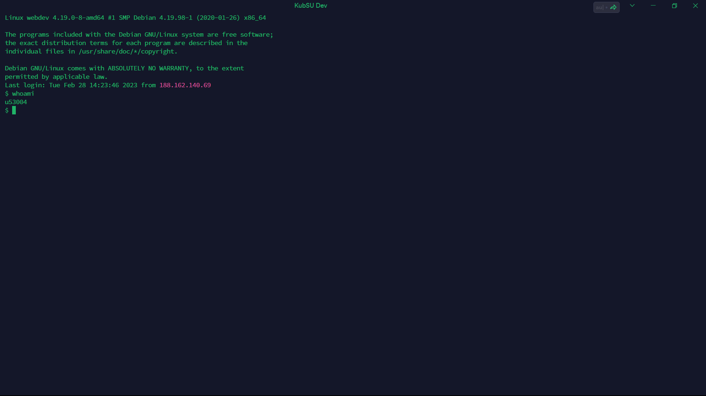
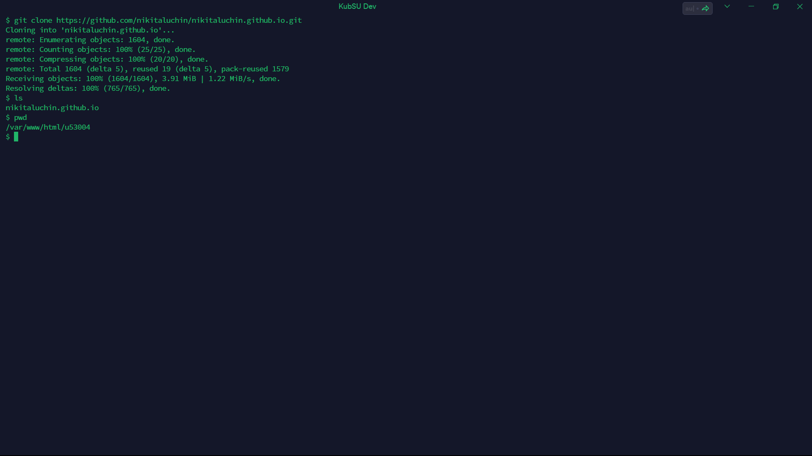

Выполнен вход на учебный сервер по SSH. Вывел имя юзера

С помощью команды ping узнаем IP домена kubsu.ru

Получаем A-записи и MX-записи доменов

С помощью whois узнаем дату регистрации доменов

Клонируем репо. Выводим файлы и текущую директорию
665 файлов было скачано по SFTP на локальный компьютер